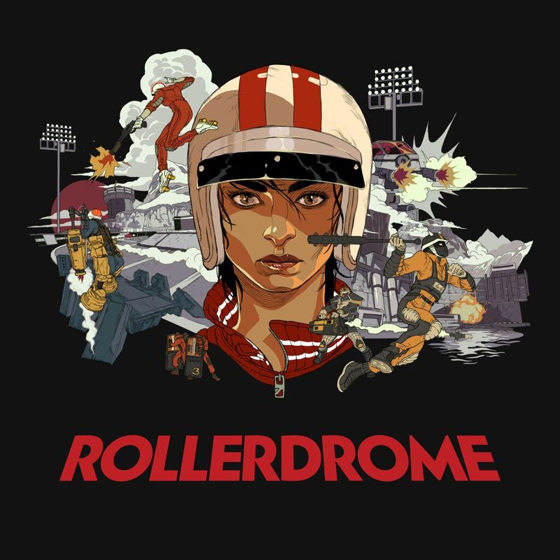
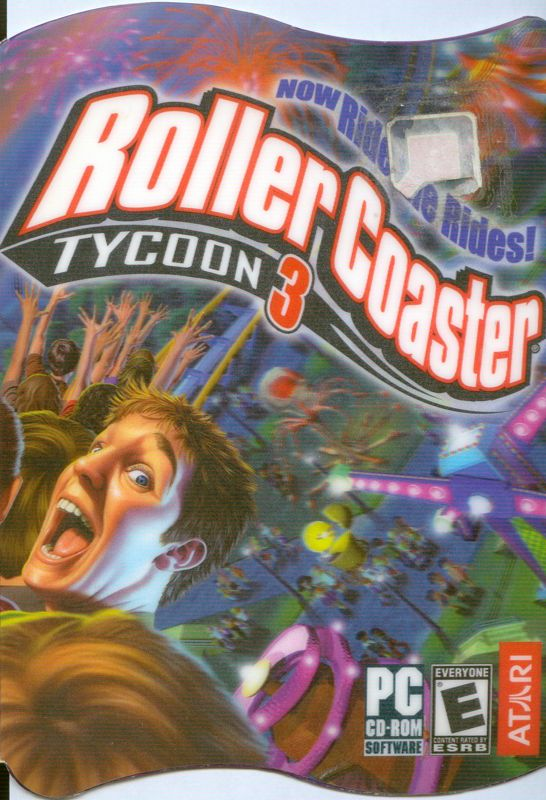
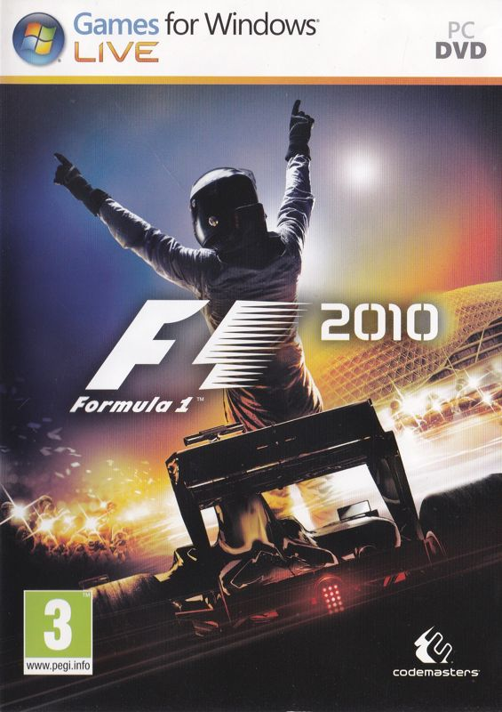
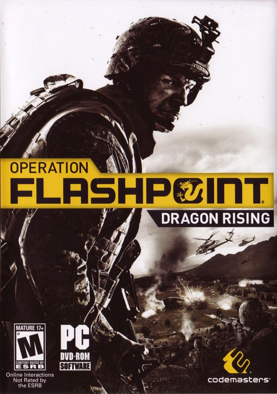

While
leading development on Rollerdrome, Andrew was instrumental in
adding automated testing to help improve efficiency and streamline
the project.
-Andrew Brechin, Technical Director, Roll7
Andrew's
technical expertise paired with excellent facilitation skills make
it easy to continually improve.
-Sean Sweeney, Snr Software Engineer, Epic Games
Andrew's
depth of experience makes him hugely effective as both an individual
contributor and engineering leader.
-David Edery, Co-Founder, Spry Fox
I would
highly recommend working with Andrew to any team who have a sense
that they would get a lot of value from automated testing, but no
clear idea where to start.
-Ricky Haggett, Creative Director, Hollow Ponds
Andrew is a leading expert on automation in the video game industry: a veteran game programmer, leader, and automation consultant with over 20 years of hands-on experience shipping titles at all scales.
Andrew runs Automated AF, which works with studios on the Quality Pipeline between commits and builds, empowering teams with stable games that they can quickly iterate on.
- Senior roles at Codemasters, Sega Hardlight, Spry Fox, and Roll7
- Credited on RollerCoaster Tycoon 3, F1, Sonic Dash, Alphabear, and Rollerdrome
A frequent international speaker, Andrew has shared his expertise on build systems, test automation, and game development at conferences around the world. Since 2024 he has been helping studios around the world make builds boring.
Selected titles
-

-


-
